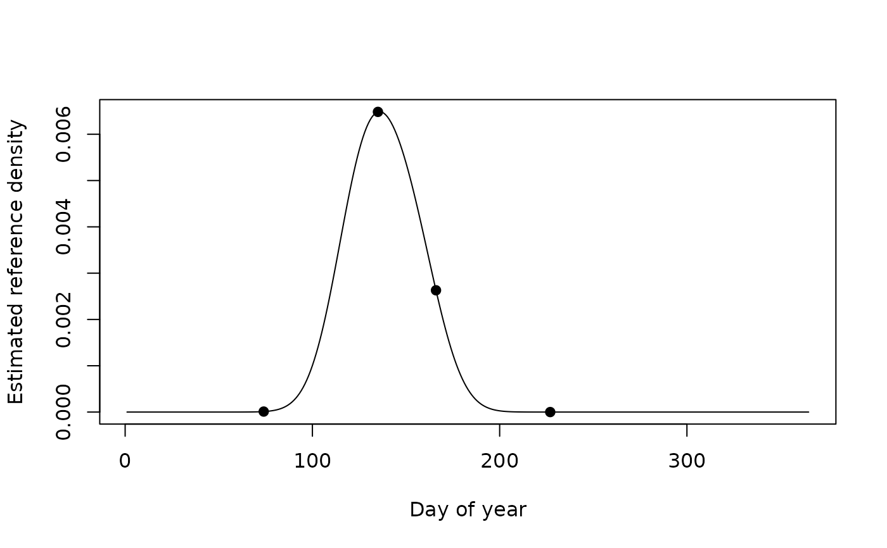

Calculate Day-of-Year Phenology Weights Using Circular Kernel Density
Source:R/doy_kde_weights.R
doy_kde_weights.Rddoy_kde_weights() converts A_dates and B_dates to day of year. A kernel
density curve is then estimated from A_dates, which are interpreted as
reference activity, occurrence, or phenology dates. The density of this
reference distribution is evaluated at each date in B_dates.
Circularity is approximated by repeating the reference day-of-year values one seasonal cycle before and after the original observations. This reduces boundary effects between the end and beginning of the year.
The density values associated with B_dates can be transformed to weights
using either:
"minmax_A": Min-max scaling relative to the complete reference density curve. The minimum density along the curve is assigned a weight of zero and the maximum density is assigned a weight of one."percentile_A": he empirical percentile rank of each density-at-B_datesvalue among all values of the reference density curve. Larger values therefore indicate dates occurring during relatively high-density portions of the estimated reference phenology.
The resulting weights may be used as relative measures of seasonal availability, sampling relevance, or phenological correspondence. For example, they may be supplied as observation weights in a subsequent spatial kernel-density or sampling-effort analysis.
Usage
doy_kde_weights(
A_dates,
B_dates,
scale = c("minmax_A", "percentile_A"),
n_days = NULL,
bw = "nrd0",
n = NULL,
eps = 1e-06
)Arguments
- A_dates
A non-empty vector of reference dates representing the activity or phenological distribution from which the seasonal density curve is estimated. Values must be coercible to class
"Date"byas.Date(). Missing or invalid dates are not allowed.- B_dates
A non-empty vector of dates for which phenological weights are required. Values must be coercible to class
"Date"byas.Date(). Missing or invalid dates are not allowed.- scale
A character string specifying how the reference density values evaluated at
B_datesare converted to weights. Must be one of"minmax_A"or"percentile_A". Partial matching is supported throughmatch.arg().- n_days
Either
NULL,365, or366. Defines the length of the seasonal cycle used by the circular density calculation. WhenNULL, a 366-day cycle is used if any date inA_datesorB_datesfalls on day 366; otherwise, a 365-day cycle is used.Setting this argument explicitly can be useful when several datasets must be analysed using the same seasonal definition. Note that setting
n_days = 365does not remove or remap observations occurring on day 366.- bw
Bandwidth passed to
stats::density(). The default,"nrd0", uses the corresponding automatic bandwidth-selection rule. A positive numeric bandwidth may be supplied to control the amount of seasonal smoothing directly. The bandwidth is expressed in day-of-year units.- n
Either
NULLor an integer giving the number of equally spaced evaluation points used for the estimated density curve. WhenNULL,n_dayspoints are used. Values smaller than 10 are not allowed.Increasing
nproduces a more finely resolved density curve but does not add information beyond that contained in the input dates.- eps
A single numeric value in the interval \([0,\,0.5)\). Used only when
scale = "percentile_A". Ifeps > 0, percentile weights are clamped betweenepsand1 - eps. This prevents exact zero and one values before transformations such as the logit.
Value
A named list containing:
weights_raw: A numeric vector with one value per element ofB_dates, containing the unscaled reference-density value evaluated at the corresponding day of year.weights: A numeric vector with one scaled phenological weight per element ofB_dates. Values are on a zero-to-one scale, subject to clamping byepswhen percentile scaling is used.B_doy: An integer vector containing the day of year derived from each element ofB_dates.density: A list with numeric componentsxandy. Componentxcontains the day-of-year evaluation grid and componentycontains the estimated density values derived fromA_dates.scale: The scaling method used.n_days: The seasonal cycle length used in the calculation.
The order and length of weights_raw, weights, and B_doy correspond to
the order and length of B_dates.
Details
Estimates a seasonal activity-density curve from a set of reference dates and assigns phenological weights to another set of dates. Seasonality is represented by day of year and estimated using a circular approximation to kernel density estimation.
Day of year is calculated as the zero-based yday component returned by
as.POSIXlt() plus one. Thus, January 1 is day 1 and December 31 is day 365
in a non-leap year or day 366 in a leap year.
To approximate a circular density, the reference day-of-year vector
A is expanded to:
$$(A - D,\; A,\; A + D)$$
where D is n_days. A conventional one-dimensional kernel density is
then estimated over the interval from day 1 to day D. Repeating the
observations on both sides allows observations near the beginning of the
year to influence the density near the end of the year, and vice versa.
The approach is a practical wrapped-data approximation rather than a
specialised circular probability-density estimator. Because three copies
of every reference observation are passed to stats::density(), the
absolute magnitude of the returned density is affected by this
construction. The scaled weights remain useful for relative comparisons
within a result, but weights_raw should not be interpreted as a
conventional probability density integrating to one over the focal
day-of-year interval.
With "minmax_A" scaling, weights are calculated as:
$$ w_i = \frac{f(B_i) - \min(f)} {\max(f) - \min(f)} $$
where \(f(B_i)\) is the reference-density value at the day of year of the
\(i\)-th B_dates observation, and the minimum and maximum are calculated
over the full estimated reference curve.
With "percentile_A" scaling, each weight is the proportion of values along
the estimated reference curve that are less than or equal to the
density-at-date value:
$$ w_i = \frac{1}{m}\sum_{j=1}^{m} I(f_j \leq f(B_i)) $$
where \(m\) is the number of density-grid points and \(\mathbf{1}\{\cdot\}\) is the indicator function.
This percentile is calculated over grid points rather than over the original
observations in A_dates. It therefore describes the relative position of
a date's density within the estimated annual density curve, not the
percentile rank of that date among the observed reference dates.
Dates from different calendar years are pooled by day of year. Consequently, the function estimates an average seasonal pattern and does not retain interannual differences. In addition, calendar dates after February 28 are shifted by one day in leap years relative to non-leap years because the function uses literal calendar day of year. Users requiring a leap-day-free or biologically standardised seasonal axis should preprocess their dates before calling this function.
Input validation
Both date vectors must be present and non-empty. Conversion with as.Date()
must not produce missing values. The function also requires n_days to be
either 365 or 366 and n to be at least 10.
For "minmax_A" scaling, the estimated density curve must have a finite,
non-degenerate range. An error is produced when its maximum is not greater
than its minimum.
Validation of eps occurs only when scale = "percentile_A", because this
argument is not used by min-max scaling.
Bandwidth selection
The bandwidth strongly affects the resulting weights. A small bandwidth produces a more locally variable seasonal curve, whereas a large bandwidth produces stronger smoothing across dates. Automatic bandwidth selection provides a convenient default, but a biologically meaningful numeric bandwidth may be preferable when the expected duration of an activity period is known.
See also
stats::density() for kernel-density estimation,
stats::approx() for interpolation of density values, and
as.Date() for date conversion.
Examples
## Reference activity dates concentrated in spring and early summer
A_dates <- as.Date(c(
"2015-04-28", "2015-05-07", "2015-05-18",
"2016-05-03", "2016-05-21", "2016-06-04",
"2017-05-11", "2017-05-26", "2017-06-09"
))
## Inventory dates to be weighted
B_dates <- as.Date(c(
"2018-03-15",
"2018-05-15",
"2018-06-15",
"2018-08-15"
))
## Min-max weights relative to the complete reference curve
res_minmax <- doy_kde_weights(
A_dates = A_dates,
B_dates = B_dates,
scale = "minmax_A"
)
res_minmax$weights
#> [1] 0.7268824 0.9993586 0.9430109 0.5202931
res_minmax$B_doy
#> [1] 74 135 166 227
## Percentile weights, excluding exact zero and one
res_percentile <- doy_kde_weights(
A_dates = A_dates,
B_dates = B_dates,
scale = "percentile_A",
eps = 0.01
)
res_percentile$weights
#> [1] 0.6520548 0.9863014 0.8465753 0.5123288
## Combine dates and calculated weights
data.frame(
inventory_date = B_dates,
day_of_year = res_percentile$B_doy,
raw_density = res_percentile$weights_raw,
phenology_weight = res_percentile$weights
)
#> inventory_date day_of_year raw_density phenology_weight
#> 1 2018-03-15 74 0.0009545298 0.6520548
#> 2 2018-05-15 135 0.0010044470 0.9863014
#> 3 2018-06-15 166 0.0009941242 0.8465753
#> 4 2018-08-15 227 0.0009166829 0.5123288
## Use a biologically selected bandwidth of 14 days
res_bw <- doy_kde_weights(
A_dates = A_dates,
B_dates = B_dates,
scale = "minmax_A",
bw = 14
)
## Inspect the estimated seasonal density curve
plot(
res_bw$density$x,
res_bw$density$y,
type = "l",
xlab = "Day of year",
ylab = "Estimated reference density"
)
points(
res_bw$B_doy,
res_bw$weights_raw,
pch = 19
)

## Explicitly use a 366-day cycle
leap_result <- doy_kde_weights(
A_dates = as.Date(c("2020-02-20", "2020-02-29", "2020-03-08")),
B_dates = as.Date(c("2020-02-29", "2020-03-05")),
n_days = 366,
bw = 5
)
leap_result$n_days
#> [1] 366